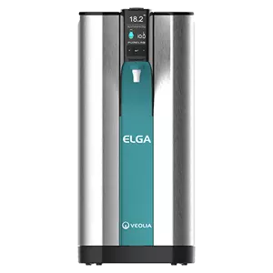
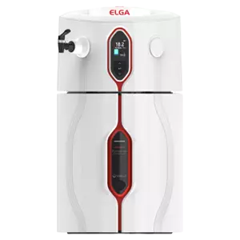
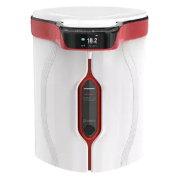
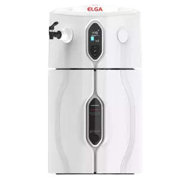
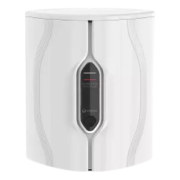
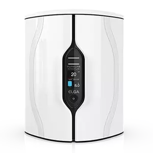
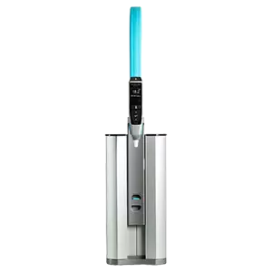
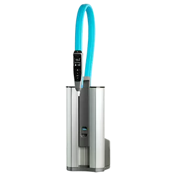
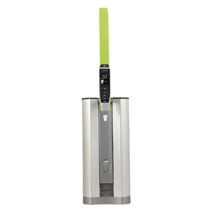
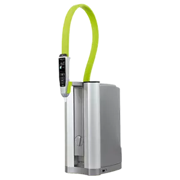

PURELAB Quest
Wykonany z ponad 85% z materiałów z odzysku. Zaprojektowany z materiałami eksploatacyjnymi o długim terminie przydatności. Konstrukcja oszczędzająca miejsce oznacza bardziej wydajny zespół i laboratorium. Dzięki okresowej recyrkulacji zmniejsza się prawdopodobieństwo wzrostu biofilmu.Woda dostarczana w ilości 1.2 litrów na minutę ogranicza przerwy do minimum. wykonywaniu kilku zadań równocześnie.
Jest jedynym na rynku systemem, który dozuje wszystkie 3 rodzaje wody z kompaktowego, ekonomicznego i łatwego w użyciu urządzenia.

PURELAB Chorus 1 Complete
Zapewnia kompletne rozwiązanie, od wody pitnej do wody ultraczystej i jest idealny dla laboratoriów potrzebujących do 480 litrów ultraczystej wody 18,2 MΩ.cm. Dzięki łatwej w obsłudze, ergonomicznej konstrukcji, wodę można odmierzać i dozować bez obaw bezpośrednio z systemu lub korzystając z dodatkowych dozowników Halo.

PURELAB Chorus 1
Gdy potrzebujesz najwyższej czystości wody, PURELAB Chorus 1 stanowi idealne rozwiązanie. Konsekwentnie zapewniając czystość wody na poziomie 18,2 MΩ.cm (Typ I+/I) i wspierany przez zaawansowany system dejonizacji PureSure®, PURELAB Chorus 1 pozwala skupić się na uzyskiwaniu dokładnych wyników przy jednoczesnym zapewnieniu nieprzerwanego przepływu pracy.

PURELAB Chorus 2+
Zapewnia wyeliminowanie bakterii i jakość nieorganiczną w zastosowaniach analitycznych i naukach przyrodniczych, wykraczających poza podstawowe prace laboratoryjne. Dzięki prostej konstrukcji i łatwości użytkowania, wodę można bez obaw odmierzać i dozować z systemu lub z innych dostępnych dozowników Halo.

PURELAB Chorus 2
Kiedy woda typu II jest wszystkim, czego potrzebujesz, PURELAB Chorus 2 (RO/DI) jest niezawodnym rozwiązaniem, które elastycznie spełnia Twoje wymagania. Gama zbiorników retencyjnych zaprojektowanych w celu utrzymania optymalnej czystości przechowywanej wody oczyszczonej o pojemności 15, 30, 60 i 100 litrów.

Chorus 3
Gdy wystarczy woda o ogólnej jakości laboratoryjnej, PURELAB Chorus 3 jest niezawodnym rozwiązaniem, które elastycznie spełni Twoje wymagania. Z szeregiem zbiorników retencyjnych zaprojektowanych w celu utrzymania optymalnej czystości przechowywanej wody oczyszczonej o pojemności 15, 30, 60 i 100 litrów.

PURELAB flex 1
PURELAB flex 1 jest przeznaczony do dozowania wody, gdy jest podłączony do zbiornika lub pętli dystrybucyjnej. System ten działa zarówno jako dozownik, jak i prosty system dejonizacji.

PURELAB flex 2
Wielokrotnie nagradzany system PURELAB flex 2 zapewnia idealną czystość wody do zastosowań analitycznych i nauk przyrodniczych, które wymagają wody RO typu III do ultraczystej wody typu I (18,2 MΩ.cm). Pozwala skupić się na rutynowych pracach testowych bez obaw o jakość wody wpływającą na wyniki testów.

PURELAB flex 3
PURELAB flex 3 to najlepszy system, który pozwala z wody kranowej uzyskać wodę ultraczystą. Zaprojektowany specjalnie z myślą o Twoich potrzebach - łatwy w użyciu, który dokładnie dostarcza czystą wodę. Elastyczny system modułowy można skonfigurować w ten sposób, aby dostarczał wodę o takiej jakości, jakiej potrzebujesz do swoich zastosowań.
